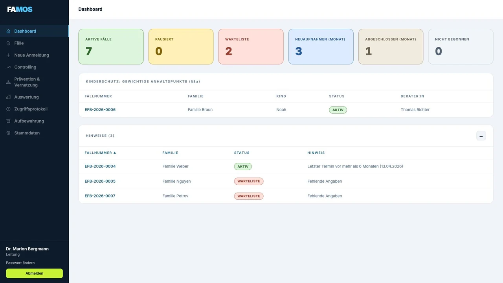
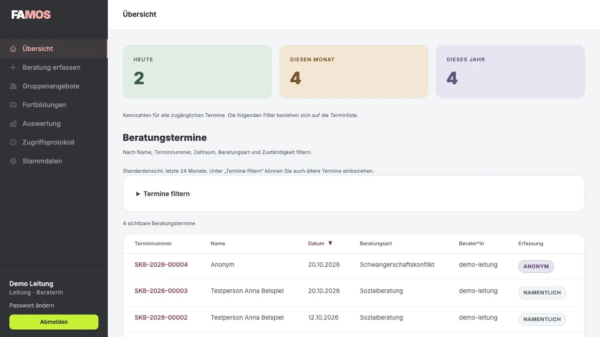
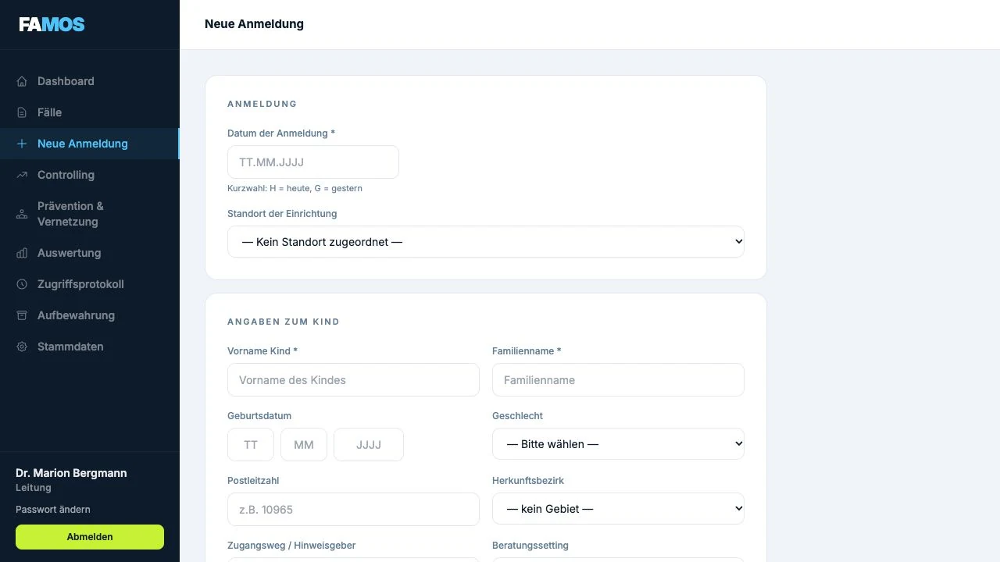
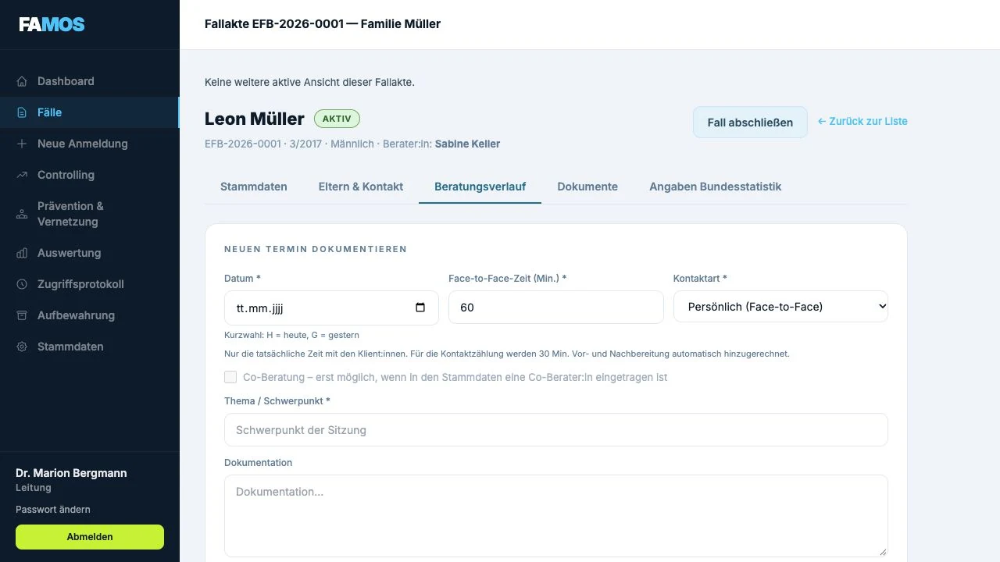
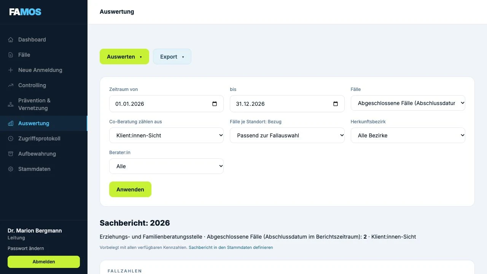
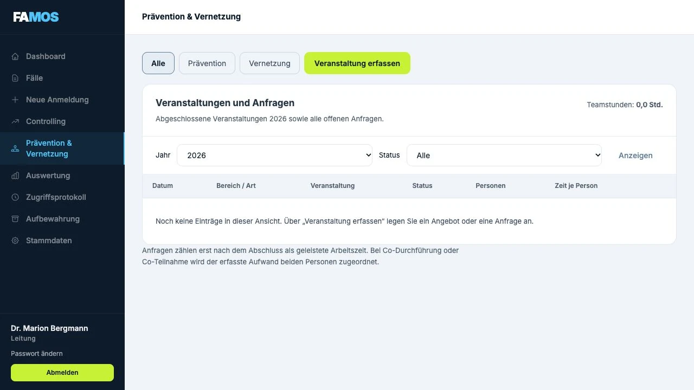
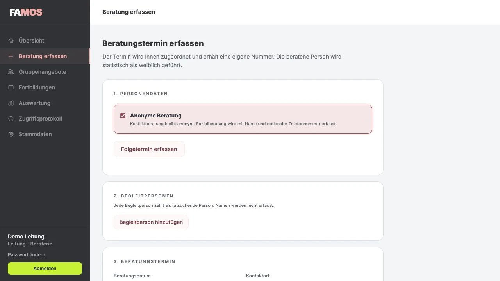
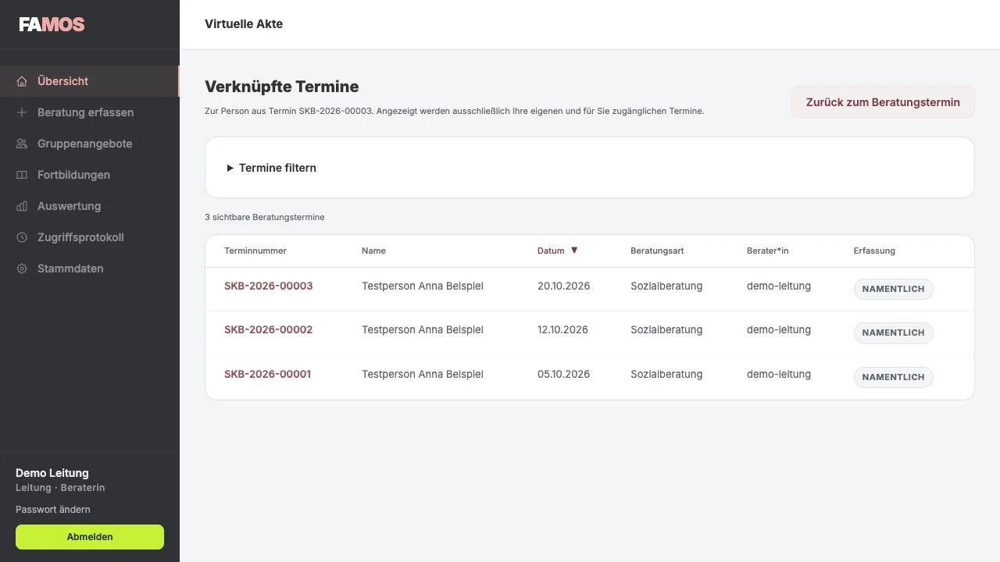
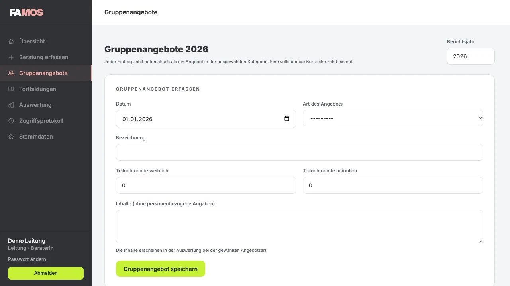
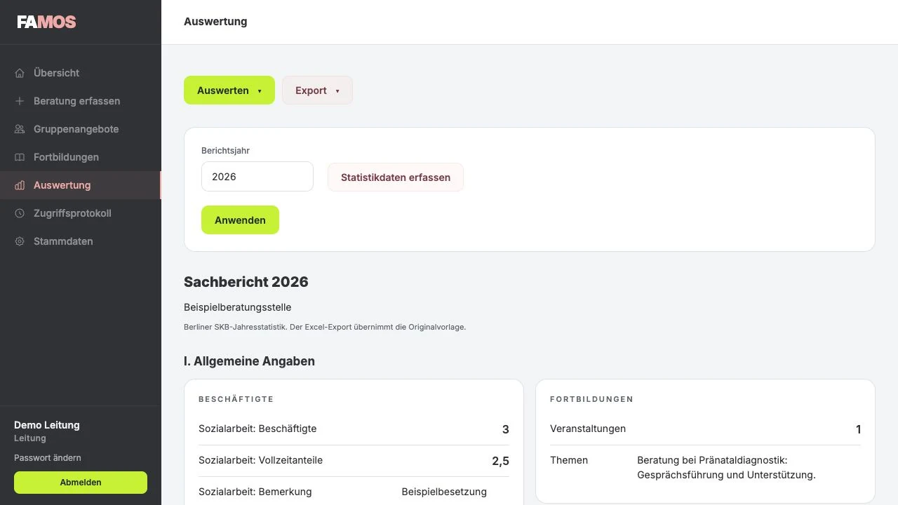

EFB · Erziehungs- und Familienberatung
Von der Anmeldung über Fallakte und Beratungsverlauf bis zu Bundesstatistik und Sachbericht. Dazu Prävention und Vernetzung.
Fallmanagement und Organisation
FAMOS verbindet Dokumentation und Auswertung für Erziehungs-, Familien- und Schwangerschaftskonfliktberatung. Die Anwendungen laufen im Browser, ohne Installation auf Ihren Geräten.


Von der Anmeldung über Fallakte und Beratungsverlauf bis zu Bundesstatistik und Sachbericht. Dazu Prävention und Vernetzung.
Anonyme Konfliktberatung und namentliche Sozialberatung, Folgetermine mit virtueller Akte, Gruppenangebote, Fortbildungen und Berliner Sachbericht.
EFB und SKB lassen sich einzeln beauftragen. Sie teilen das Bedienkonzept; Datenbestände und Berechtigungen bleiben getrennt. Alle Abbildungen zeigen synthetische Beispieldaten.
Teamassistenz, Berater:innen und Leitung erhalten Ansichten und Rechte für ihre Aufgaben.
Bei der Anmeldung erfassen Sie das Kind und seine Bezugspersonen. Weitere Angaben können Sie später ergänzen.

Die Fallakte enthält Stammdaten, Elternkontakte, Beratungstermine und Dokumente. Die Angaben für die Bundesstatistik pflegen Sie in einem eigenen Reiter der Fallakte.

Wählen Sie Zeitraum, Fälle und Kennzahlen für Ihre Auswertung.
Die IDEV-Datei wird in IDEV importiert. Eine direkte Übermittlung aus FAMOS an das Statistikamt ist eine geplante Erweiterung.

Anfragen und Veranstaltungen erfassen Sie unabhängig von den Beratungsfällen.

Jeder Termin erhält eine eigene Nummer und eine zuständige Person. Die virtuelle Akte zeigt die verknüpften Termine.
Die Beratungsart bestimmt die Erfassung. Die Konfliktberatung bleibt anonym. In der Sozialberatung erfassen Sie Name und bei Bedarf eine Telefonnummer.

Einen Folgetermin verknüpfen Sie mit einem früheren Termin. Bei namentlicher Erfassung helfen das letzte Beratungsdatum und weitere Vergleichsangaben bei der Auswahl der Person.

Die erfassten Angebote und Fortbildungen fließen in den Jahresbericht ein.

Die Auswertung zählt Termine und Personen getrennt. Sie berücksichtigt Beratungen, Stiftungsanträge, Gruppenangebote und Jahresangaben.

In der Produktvorstellung besprechen wir Ihre Abläufe und die Voraussetzungen für einen kostenfreien Testbetrieb.
Wir zeigen Ihnen die Anwendung und besprechen die Aufgaben von Teamassistenz, Berater:innen und Leitung.
Wir vereinbaren Version, Funktionsumfang, Start und Laufzeit. Für den Test erhalten Sie eine eigene Installation.
Vor dem Einsatz mit echten Beratungsdaten klären wir Datenschutzvereinbarungen, Rollen und technische Voraussetzungen. Wir planen Datenübernahme und Einführung mit Ihrem Team.
Das schriftliche Angebot enthält Leistungen und Konditionen für Ihre Anwendungen und Standorte.
Wir zeigen Ihnen EFB oder SKB und besprechen Ihre Anforderungen an Abläufe, Berichte und Einführung.
E-Mail: hello@volta.codes